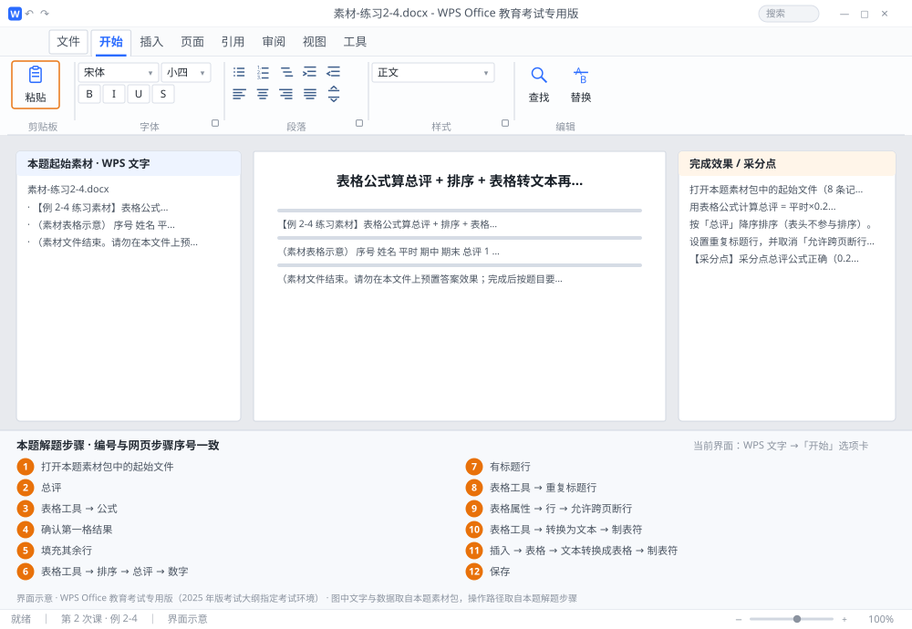

完成比对文档 · 例 2-4
表格公式算总评 + 排序 + 表格转文本再转回 ｜ 第 2 次课 / WPS 文字 ｜ 网页：实操-文字2.html ｜ 考试环境：WPS Office 教育考试专用版（2025 年版考试大纲指定考试环境）
用途 本页按修订后的题目要求与解题步骤生成，是交卷自查的结果基准：
逐项列出每一步应出现的可复核结果，配合模拟操作截图与解题结果文件使用。
它不是素材包的一部分，不会预置答案动作；起始素材仍从本题素材包下载。
一、本题起始素材包
目录：练习素材/练习2-4-表格公式与排序/ ｜
下载包：练习素材/下载/练习2-4-表格公式与排序.zip
二、题目要求
- 打开本题素材包中的起始文件（8 条记录，B 列为平时、C 列为期中、D 列为期末，E 列「总评」为空）。
- 用表格公式计算总评 = 平时×0.2 + 期中×0.3 + 期末×0.5，结果保留 1 位小数。
- 按「总评」降序排序（表头不参与排序）。
- 设置重复标题行，并取消「允许跨页断行」。
- 将表格转换为文本（制表符分隔），再用「文本转换成表格」还原为 6 列表格。
- 保存为 学号-姓名-练习2-4.docx。
三、解题步骤（编号与下方核对表、截图编号一致）
- 打开本题素材包中的起始文件。确认列的顺序：B=平时、C=期中、D=期末、E=总评。列号不对，公式全错。
- 定位第一格。光标放在第 1 条记录的「总评」单元格（E2）。
- 插入公式。「表格工具」→「公式」→ 在公式框里输入：=ROUND(B2*0.2+C2*0.3+D2*0.5,1)→ 确定。WPS 文字表格的公式支持 A1 式单元格地址，也支持 =SUM(LEFT)、=PRODUCT(LEFT) 这类方向引用。
- 确认第一格结果。应得到与手算一致的数字；若显示的是公式文本，说明单元格是文本格式，需先改为常规。
- 填充其余行。复制该单元格 → 逐格粘贴并核对地址是否随行变化（E3 应为 B3*0.2…）。也可用 F4 重复上一步操作快速插入同一公式，再逐格确认引用行号。
- 排序。选中整个表格（含表头）→「表格工具」→「排序」→ 主要关键字选「总评」→ 类型「数字」→ 选「降序」→ 勾选「列表中有标题行」→ 确定。
- 检查标题行。排序后表头必须仍在第 1 行；若被排到中间，说明没勾「有标题行」，撤销重做。
- 重复标题行。光标置于表头行 →「表格工具」→「重复标题行」。
- 取消跨页断行。选中整个表格 →「表格属性」→「行」→ 取消勾选「允许跨页断行」→ 确定。作用是让同一行不被拆到两页。
- 表格转文本。选中整个表格 →「表格工具」→「转换为文本」→ 分隔符选「制表符」→ 确定。
- 文本转回表格。选中刚转换出的文本 →「插入」→「表格」→「文本转换成表格」→ 列数 6、分隔符「制表符」→ 确定。
- 保存。保存为 学号-姓名-练习2-4.docx。
四、完成效果 / 采分点
采分点总评公式正确（0.2/0.3/0.5 权重）且保留 1 位小数 · 8 条记录全部算出结果 · 按总评降序且表头在第一行 · 已设重复标题行 · 已取消允许跨页断行 · 表格与文本互转分隔符为制表符且还原为 6 列
五、逐项完成核对表
| 步骤 | 关键操作路径 | 应出现的结果（可复核） |
|---|
| 1 | 打开本题素材包中的起始文件 | 打开本题素材包中的起始文件 |
| 2 | 定位第一格 | 「总评」、E2 |
| 3 | 插入公式 | 「表格工具」、「公式」、=ROUND(、B2、C2 |
| 4 | 确认第一格结果 | 确认第一格结果 |
| 5 | 填充其余行 | E3、B3、F4 |
| 6 | 排序 | 「表格工具」、「排序」、「总评」、「数字」、「降序」 |
| 7 | 检查标题行 | 1 行、「有标题行」 |
| 8 | 重复标题行 | 「表格工具」、「重复标题行」 |
| 9 | 取消跨页断行 | 「表格属性」、「行」、「允许跨页断行」 |
| 10 | 表格转文本 | 「表格工具」、「转换为文本」、「制表符」 |
| 11 | 文本转回表格 | 「插入」、「表格」、「文本转换成表格」、「制表符」 |
| 12 | 保存 | 学号-姓名-练习2-4.docx |
六、模拟操作截图

界面示意 · WPS Office 教育考试专用版 · 橙色编号与本题解题步骤序号一致；
图中文字与数据取自本题素材包，功能入口取自本题解题步骤。
核对方法：按网页解题步骤完成并另存自己的成稿后，逐行比对本表第 3 列的
参数、公式、区域、文件名与对象数量；再对照网页「完成效果 / 采分点」检查版式是否一致。